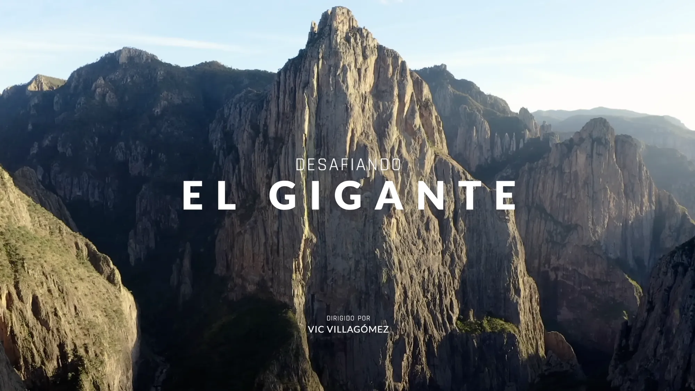

Desafiando el Gigante
La primera vez que conocí a Vic llevaba 4 meses de haber subido El Gigante. Me dijeron que cuando regresó de la aventura ya no era el mismo: después de vivir 7 días en una pared a 900 metros de altura difícilmente uno vuelve a la normalidad como si nada hubiera pasado. Sobre todo si nunca en tu vida has escalado.
No sabía a qué me iba a enfrentar. Pero cuando me invitó a su oficina, me entregó un par de discos duros que se quedarían conmigo por los siguientes 2 años. En ellos, 634GB de material en crudo de los 7 días de la aventura que Vic, por obvias razones, no se atrevía a abrir. Este fue el inicio de una amistad que hoy valoro como una de las más influyentes en mi carrera.
Lo que comenzó como un proyecto corto y espontáneo, terminó convirtiéndose en una historia que marcaría el mundo de la escalada en México.

Directed by
Vic Villagómez
Produced by
Sebastián Landeros
Edited by
Luis Carlos Mendoza


DESAFIANDO EL GIGANTE
Cotiza en segundos.
Recibe una cotización aproximada en tu correo electrónico.